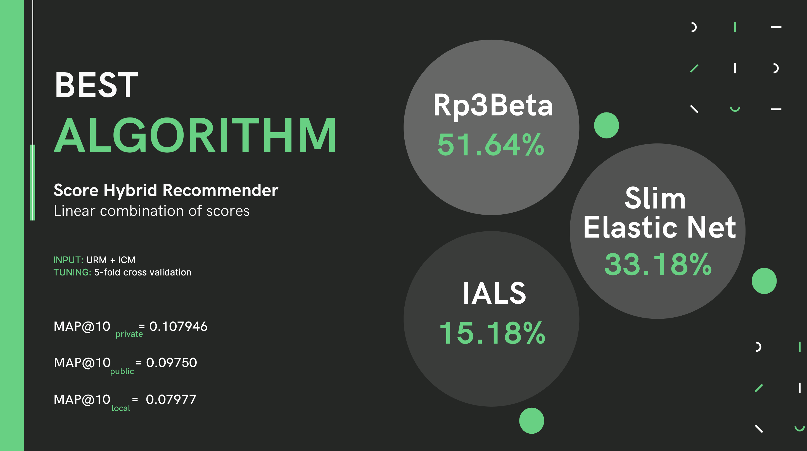

The Recommender System Challenge is a competition reserved to the students of the Recommender Systems course in Politecnico di Milano. The goal of the competition is to provide recommendations in the domain of book recommendations. The datasets provided by the competition owners, contains both interactions between users and books, and tokens (words) extracted from the book text. The main goal of the competition is to discover which item (book) a user will interact with.
It wasn't an easy journey and at some point I was running hyperparameter tuning in three different PCs at the same time. Eventually, one of those stayed up and running for a week in a row just to tune one set of parameters. I tried several different algorithms, each of those tuned millions of times with parameters variation, and also different approaches like using hybrids algorithms combining simple ones with different mathematical approaches. You can see some of those techniques in the following timeline of my 3-moth challenge experience.
The final score was calculated considering the MAP (Mean Average Precision) and it was evaluated both in a public and a private test-set to avoid partecipant to overfitt their models. Surprisely, my model was performing better in the private leaderboard rather than in the public one. My final algoritms obtained a MAP = 0.107946, over 10 objects. You can see the specs of the algorithm here:
